古希腊人最早开始使用尺规作图，这种方法存在很大的局限性，其中的某些缺陷在我们看来十分可笑。作图的方法包括画点、直线（或线段）以及圆的一部分（或弧线），作图工具则是长度不确定、没有刻度的直尺和圆规。古希腊人使用这些工具可以作出线段的平分线（线段中点的垂线）、角平分线、两点间的对称点，过一点作已知直线的平行线或垂线以及点在直线上的投影。他们还可以把任意线段平均分成一定数量的小段。
然而有些图无法使用尺规完成，因此就产生了一系列著名的经典问题。例如，当时的人无法解决“化圆为方”（作出一个与已知圆面积相等的正方形）、“立方倍积”（作出一立方体的棱长，使该立方体的体积等于另一个已知立方体的两倍）、“三等分角”（将一个给定的角分成三个相等的角）这样的问题。仅仅使用尺规同样无法作出某些正多边形，比如正七边形。下面我们会看到如何作出与黄金比例相关的正五边形。
不管怎样，在黄金比例的帮助下，使用尺规便可以作出正五边形。这样我们就把黄金比例融入了当时的古典思想中。
高斯（1777—1855）
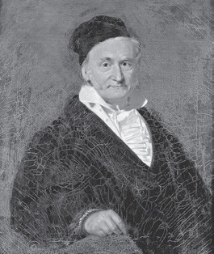
德国数学家卡尔·弗里德里希·高斯是最伟大的科学家之一，去世后被人们称为“数学王子”。虽然在其他几个领域有着同样杰出的表现，但高斯仍选择专门研究数学。他做出这样的决定在某种程度上是因为发现了正十七边形的尺规作图法。高斯
在18岁时就取得了这一突破，这不仅是他职业生涯中的关键一刻，而且对数学的未来也至关重要。
我们现在来看一个已经画出了对角线的正五边形。
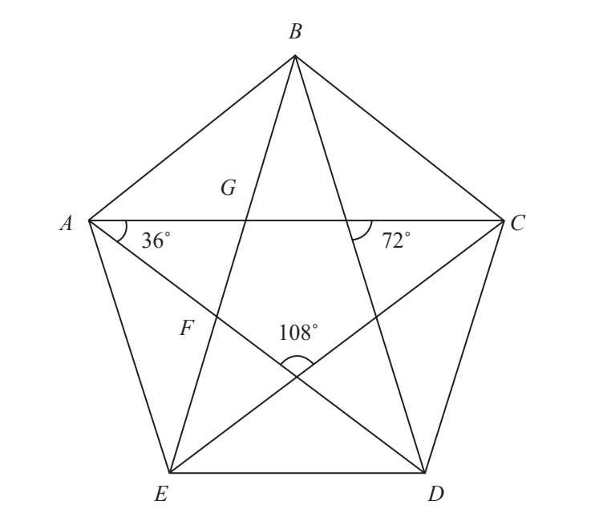
请注意三角形BED，它是图中的三种等腰三角形之一。设它的两腰（即正五边形的对角线，相当于五角星的边）BE、BD为e。此外，设底边ED（即正五边形的一条边）为p，p=1。我们将验证EB/ED=e/p=e/1=Φ，继而验证它们的比符合黄金比例，即e=Φ。
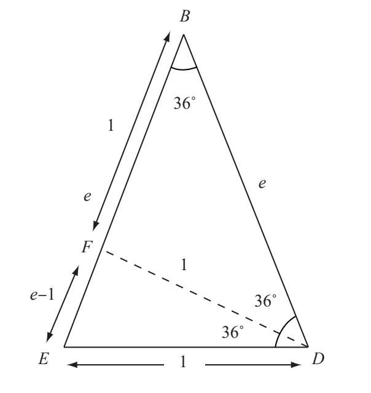
纸条折成的正五边形
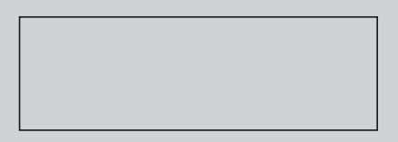
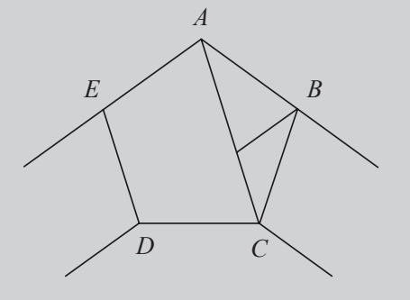
这里有一个简单的方法来创造正五边形。虽然有局限性，但只要我们不刻意追求完美，还是会得到一个比较理想的图形。你只需要在一个纸条上打个结，就能得到一个正五边形。请仔细看图来找出其中的原理。在折出的正五边形ABCDE中，我们可以将它的两条边看作两个相同直角三角形的斜边，而较长的直角边与纸条的宽相等……
将角D平分得到三角形DEF。三角形DEF与三角形BED的各角相等，因此它们在数学上被称为相似三角形。这样就符合：
EB/ED=ED/EF （1）
因为ED=FD=FB=1且EF=EB-1，将其代入等式（1）得到：
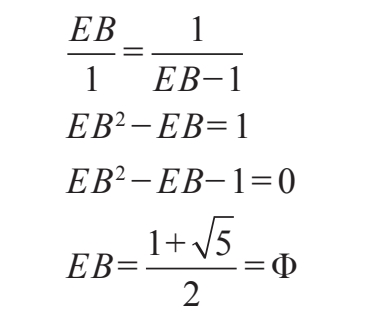
莫利定理
由于希腊人无法把一个角三等分，所以他们对这方面的关注很少，因而也就不知道简单精妙的莫利定理。如果我们在每个角的顶点作两条直线，将每个内角平均分成三部分（三等分），那么这六条直线将分别与邻角的直线两两相交于三个点，而这三点始终构成等边三角形。不论在什么样的三角形内，六条三等分线的交点都会构成等边三角形。这个定理的意义非同寻常，因为古希腊人早在2 000年前就已经总结出了三角形的大部分性质，但是对此却一无所知。莫利定理的出现距今已有100多年的历史。弗兰克·莫利（1860—1937）在1904年发现了这个定理，直到20年后才将其公之于世。
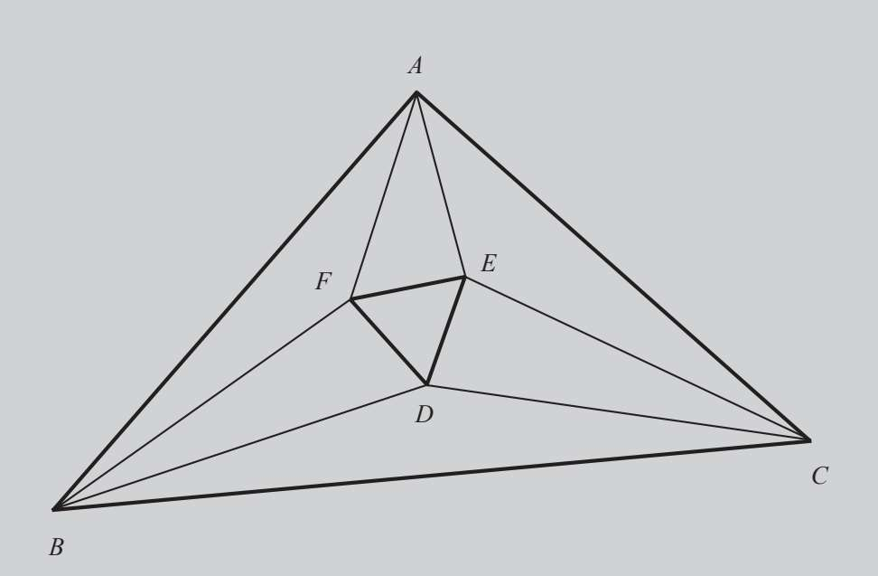
等边三角形FED即莫利三角。
这样我们就验证了先前的假设：正五边形的对角线与边之比为黄金比例。
但是五角星和黄金比例还有着更深层次的关系。下面我们来看看正五边形与画出对角线后所形成的三角形。所有三角形中只有三种不同的角：36°角、72°角、108°角。因为72是36的两倍，108是36的三倍，所以三个角的数值都是36的倍数。
正五边形内有许多等腰三角形，但是只有三种类型的等腰三角形：三角形ABE、三角形ABG、三角形AFG。其他所有等腰三角形都与其中一种相似，而且只有四种特定长度的边。设BE=a，AB=AE=b，AG=BG=AF=c，GF=d，且a>b>c>d。
我们把正弦定理应用于每个三角形，这样就可以确定在任意三角形中，一边及其对角的正弦值之比是常数。在三角形ABE中：
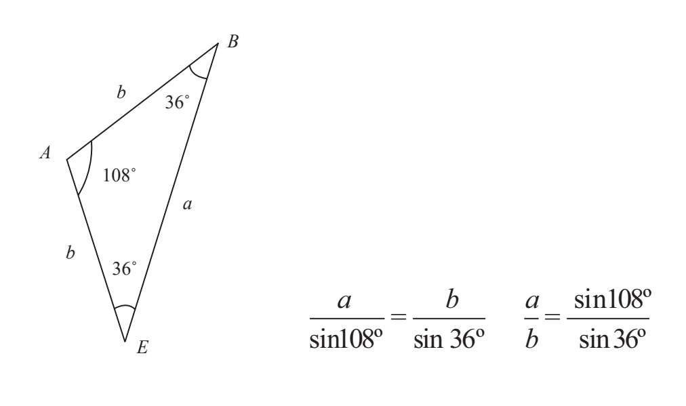
在三角形ABG中：
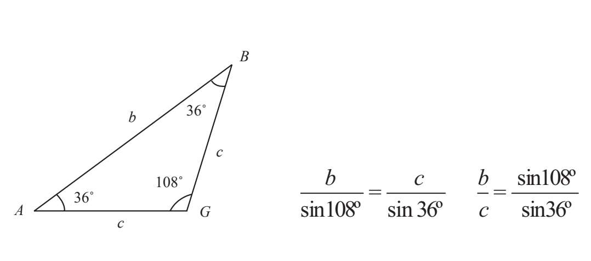
最后，在三角形AFG中：
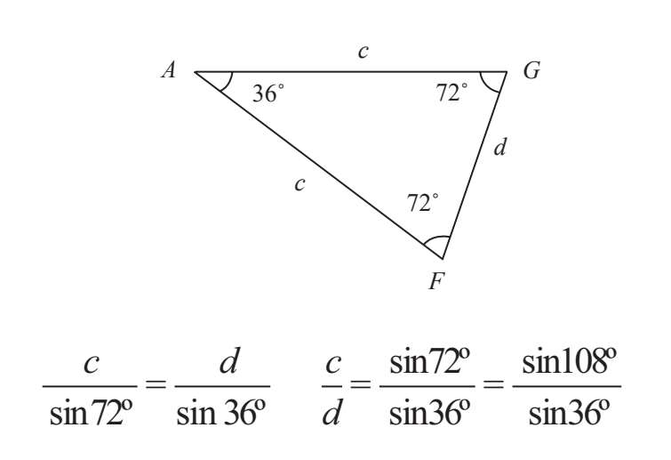
因为72°=180°-108°，而两个互为补角的正弦值相等，所以sin72°=sin108°。
这样就得到了下面的比值：
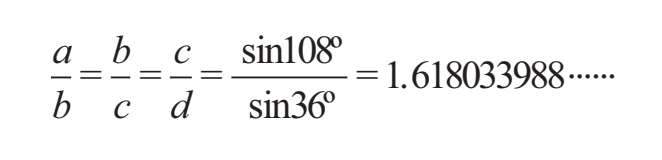
将四条边由长到短依次排列，经由三角函数推导，每一条边与后一条边的比值不变，始终为黄金比例。
我们还可以用另一种方法求出黄金比例。从第一个等式开始，请记住c=a-b，正五边形的边长始终为常数，即b=1。
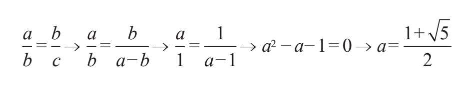
a=Φ
这样，每对边长的比值都为黄金比例。